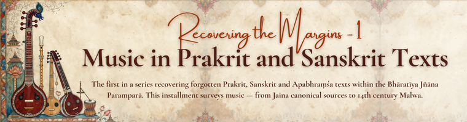

Recovering the Margins: Music in Prakrit and Sanskrit Texts
Vyom A. Shah (✉) | July 23, 2026
Introduction
With the rapid rise in research surveying,
categorizing, documenting, and delineating ancient Indian knowledge systems,
traditions, and cultures, I often find myself confounded not by methodology or
texts consulted, but by the narrow scope of sources used. As an avid reader and
lover of Sanskrit and Prakrit languages, I’ve always had access to texts that
reveal knowledge systems composed, compiled, and corroborated in both
traditions. While scholars rarely consciously limit their sources due to
preconceived notions, limited awareness and literacy about such literature
often prevent these topics from being discussed. This series of articles is a
culmination of this recurring dissonance. I’ll now discuss often-forgotten
texts in Prakrit, Sanskrit, and Apabhramśa, because it is Indian Knowledge
Systems [Bhāratīya Jñāna Parampara], not a language’s learning tradition.
This article presents an overview of music discussed
in lesser-known Prakrit and Sanskrit texts.
Early Literature
Among the oldest literary strata, Sāmaveda, the third of the trayī, is often associated with melodies and hymns. The Rāmāyaṇa, especially Bālakāṇḍa, describes Lava and Kuśa as Gāndharvatattvajña (knowers of Gandharva-s).
Classical Age
Towards the classical age, we have the Ṛkprātiśākhya uses the
word ‘yama’ for ‘svara’ – seven in number and mentions three
laya-s – vilambita, madhyama and druta. Taittirīya Brāhmaṇa and Śatapatha
Brāhmaṇa mention vīṇāvada for someone who plays vīṇā. Leaving aside the already
known texts and strata, let us examine a few Prakrit resources belonging to the
same period. The Ṭhāṇa (Sthānāṅga), the third of the aṅga-classified canonical
texts, delineates seven svara-s in 32 verses: Sajja (Ṣaḍja), Risabha (Ṛṣabha),
Gandhāra (Gāndhāra), Majjhima (Madhyama), Pañcama-Sara (Pañcama-Svara), Dhevata
(Dhaivata), and Nisāta (Niṣāda). It goes on to describe their points of articulation,
occurrences in real world, resultant effect of singing them, the classification
of three grāma, six types of mūrcchana, eight virtues of singing, intermediate
virtues, eight faults of a sūtra, three vṛtta types, and forty-nine tāna. This
is reiterated in Aṇuogadāra (Anuyogadvārasūtra) with minor variations. The
commentators starting from Jinadāsagaṇī Mahattara to Maladhāri Hemacandrasūri
expand these ideas. The cuṇṇi (cūrṇi), composed by Jinadāsagaṇī Mahattara, states
that these ideas were further elaborated in great detail in the sara-pāhuḍa
(Svara-Prābhṛta), a lost section of the Jaina canon. However, those details can
be known through the works of Bharata, Viśākhila, etc.
In the late classical era, the upāṅga-classified
canon Rāyapaseṇīya (Rājapraśnīya) describes four types of songs: Utkṣipta,
Pādānta, Manda, and Rocitāvasānna. Malagiri (13th century CE), while
commenting over these types, explains that utkṣipta is that which starts from the very beginning (of the
verse/couplet).
Medieval Age
Beyond these texts, several specialized works on
music exist. Saṅgītasamayasāra by Pārśvadeva, composed in the 1300s, is cited
by Singa Būpāla in his commentary on Saṅgītaratnākara. Sudhākalaśa’s Saṅgītopaniṣatsāroddhāra,
a shorter version of his magnum opus Saṅgītopaniṣad, composed in the 1340s, is
divided into six chapters: Gītaprakāśana, Tālapradarśana, Rāgādiprakāśana,
Vādyaprakāśana, Nṛtyāṅgaprakāśana, and Nṛtyapaddhatiprakāśana. Notably, it
provides pāṭa-s or pāṭa-varṇa-s (‘Bola’ today) for each tāla. U. P. Shah notes
that these pāṭa-s are not found in later works like Saṅgītaratnākara, Saṅgītasamayasāra,
or Bharatārṇava. Around the same time, Maṇḍana, Prime Minister of Hoshang Ghori
of Mālavā, composed Saṅgītamaṇḍana, divided into five chapters covering
definitions, subdivisions, Gīta, Mārgatāla, Deśī Tāla, and Nṛtya. Unfortunately,
this text still rests in the manuscript repository.
This
survey, by design, only traces a few threads — the aṅga and upāṅga references,
and a handful of specialized texts from the 1300s and 1340s. It leaves
untouched equally significant contributions: Nāṭyaśāstra's relationship to
these Jaina formulations, the Apabhramśa evidence in narrative and devotional
literature, later Digambara commentarial traditions, and regional treatises
that never entered the Sanskrit mainstream of Saṅgītaratnākara's orbit. Each of
these deserves its own reckoning, and I hope to take them up in future
instalments. For now, those wishing to read further may consult the following.
P.S.:
Those interested in intersection of Manuscript Illustration and Music should
refer Saṅgītanāṭyarūpāvalī by Vidya Sarabhai Nawab (1963). For a deeper dive into the India Music Traditions,
reading the series of blogs by Shreenivas Rao is the perfect choice.
Bibliography:
- H. R. Kapadia, “Jain Data about Musical Instruments”, Journal of Oriental Institute of Baroda, Vol. 2, No. 3-4; Vol. 3, No. 2; Vol. 4, No. 4.
- Vācanācārya, Sudhākalaśa (1961). Saṅgītopaniṣatsāroddhāra (U. P. Shah, Ed.; 1st ed.). Oriental Institute, Baroda.
- Pārśvadeva (1925). Saṅgītasamayasāra (T. Ganapati Shastri, Ed; 1st ed.). Trivendrum Sanskrit Series
Appendix:
A
Jina-Stutis containing the bola of music within:
1. पा पा धा धा नि धा धा ध म ध म ध ग सा सा ग सा रि गा पा
सा
सा गा गा रि धा पा न ग रि म स रि गा पा प गा सा रि धा पा।
इत्थं षड्जातिरम्यं करणलययुतं सत्कलाभिः समेतं
सङ्गीतं यस्य देवैर्विहितमिति शुभं यात्यसौ नाभिसूनुः॥१॥
2. द्रें द्रें कि ध प म प धु धु धों धों ध्र स कि ध र ध प धों र धं
दों दों कि दों दों द्राग्डिदि द्राग्डिदिकि द्रमकिं द्रणरण द्रेणवम्।
झं झि झ्रें कि झ्रें झ्रें झणण रण रण निजकि निजजनरञ्जनं
सुरशैलशिखरे भवतु सुखदं पार्श्वजिनपतिमज्जनम्॥